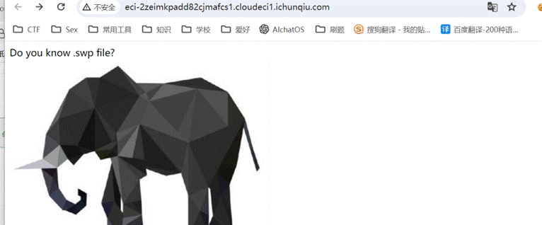
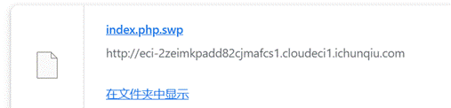
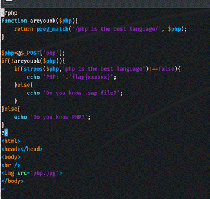
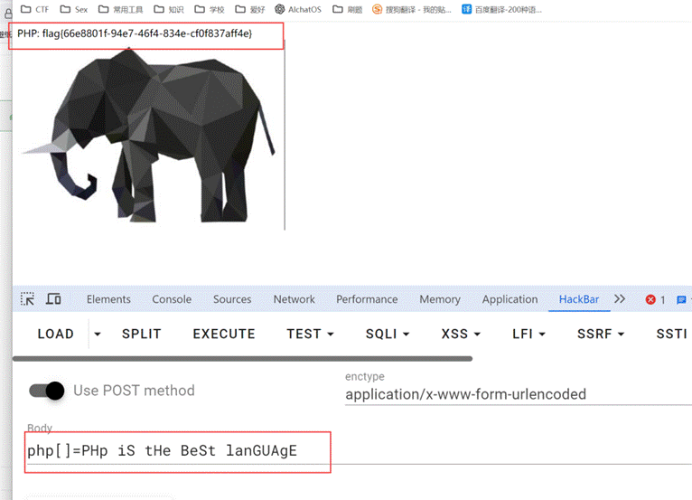

源码泄露 — .index.php.swp
访问 /.index.php.swp 发现存在 vim 交换文件，可下载源码：

在 Kali 中使用 vim -r 恢复文件内容：

源码分析
恢复后的 PHP 源码如下：
<?php
function areyouok($php){
return preg_match('/php is the best language/', $php);
}
$php=@$_POST['php'];
if(!areyouok($php)){
if(strpos($php,'php is the best language')!==false){
echo 'PHP: '.'flag{xxxxxx}';
}else{
echo 'Do you know .swp file?';
}
}else{
echo 'Do you know PHP?';
}
?>
代码逻辑分析：
areyouok()函数使用preg_match检查输入是否匹配/php is the best language/（大小写敏感）- 先判断
!areyouok($php)— 必须不匹配 - 再判断
strpos($php, 'php is the best language')— 必须能定位到该子串 - 两个条件同时满足才能输出 flag
绕过思路
绕过方法：大小写绕过 areyouok + 数组绕过 strpos
preg_match 默认大小写敏感（不使用 /i 修饰符），而 strpos 也是大小写敏感。但若传入数组：
preg_match处理数组时会直接返回false（非字符串）→!areyouok()为truestrpos处理数组时也会返回false（非字符串）- PHP 的类型转换机制让
strpos仍能找到 "php is the best language"
Payload：
php[]=PHp iS tHe BeSt lanGUAgE获取 Flag
提交 payload 后成功获取 flag：

flag{66e8801f-94e7-46f4-834e-cf0f837aff4e}